Le principe de la méthode
Comprendre en deux minutes ce que fait la méthode ElHydro et ce dont vous avez besoin avant de commencer.
Qu'est-ce que c'est ?
La méthode ElHydro consiste à rogner les pixels périphériques invisibles ou inutiles en VR (crop tangentiel) pour réinjecter toute la puissance GPU économisée dans un suréchantillonnage ciblé là où l'œil regarde. Grâce à un calculateur mathématique dédié, elle compense la réduction du champ de vision pour conserver une géométrie optique parfaite tout en augmentant drastiquement la netteté effective (PPD). Le résultat est une clarté visuelle chirurgicale sans recourir à des pilotes tiers destructeurs, tout en verrouillant un framerate maximal et stable.
En d'autres mots et en plus simple : on découpe (crop) les bords inutiles de l'image que vous ne regardez jamais en jeu pour soulager votre carte graphique. La puissance ainsi libérée est directement réinjectée au centre de votre vision, ce qui rend le jeu beaucoup plus net tout en restant parfaitement fluide.
Ce qu'il faut pour mettre en place cette méthode
- OpenXR Toolkit – mod PrimaShock : c'est le toolkit qui permet d'effectuer les opérations de crop, notamment.
- Le fichier Excel de votre casque (ou ElHydro Calculator, qui reprend les mêmes formules) : il indique les bonnes valeurs dont nous aurons besoin plus tard.
Choisir un crop → calculer la résolution correspondante → saisir les 6 valeurs de crop et les 2 valeurs de résolution dans le Toolkit. Tout le reste n'est que de la préparation et de l'affinage.
Avant de continuer
Installer OpenXR Toolkit – mod PrimaShock (1.4.0)
Le Toolkit original d'abord, puis les fichiers du mod PrimaShock par-dessus.
Liens utiles
- Guide Pimax : A guide to PrimaShock's OpenXR Toolkit mod
- OpenXR Toolkit 1.3.2 : github.com/mbucchia/OpenXR-Toolkit
- Mod PrimaShock : primashock.com
- Canal Discord : discord.com/channels/…/1536426623157534750
Étape A – Prérequis
Avant d'installer le mod, assurez-vous d'avoir installé la version originale 1.3.2 d'OpenXR Toolkit.
- Téléchargez le fichier
OpenXR-Toolkit-v1.3.2.msi. - Lancez le programme d'installation et suivez les instructions pour terminer la configuration.
Étape B – Installation du mod PrimaShock
Une fois la boîte à outils de base installée, suivez ces étapes pour appliquer les fichiers modifiés :
- Télécharger les fichiers : téléchargez le fichier DLL du mod via le bouton de téléchargement du fichier ZIP. Décompressez-le et extrayez le ou les fichiers.
- Localiser le dossier d'installation : il se trouve généralement sous
C:\Program Files\OpenXR-Toolkit. - Sauvegarder vos fichiers : renommez le fichier existant
XR_APILAYER_MBUCCHIA_toolkit.dllen quelque chose commeXR_APILAYER_MBUCCHIA_toolkit.back. - Copier la nouvelle DLL : glissez-déposez le fichier
XR_APILAYER_MBUCCHIA_toolkit.dllextrait du ZIP PrimaShock dans le dossier d'installation. Si vous utilisez le mod 3D BOOST + PERFORMANCE CROP : sauvegardez également le fichier d'origine, puis copiez le nouveau fichier de shaders (postprocess.hlsl) dansC:\Program Files\OpenXR-Toolkit\Shaders. - Mettre à jour les shaders : ouvrez le dossier
Shadersdans le répertoire d'installation. - Sauvegarder les shaders d'origine : créez une copie de secours des fichiers de shaders originaux.
- Copier les nouveaux shaders : copiez le contenu du dossier
shadersissu du fichier ZIP du mod dans ce répertoire. - Vérifier : ouvrez l'application compagnon OpenXR Toolkit. Elle doit désormais afficher « Primal Shock mod ».
C:\Program Files\OpenXR-Toolkit
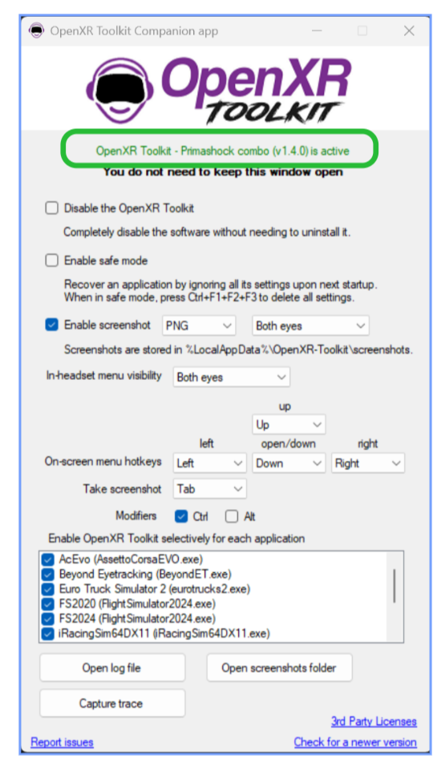
Checklist
Choisir le fichier Excel lié à son casque
Chaque casque a son propre fichier : il contient les formules qui transforment un crop en résolution.
Où le trouver
Les fichiers Excel d'ElHydro sont publiés sur le Discord : discordapp.com/channels/…/1530019814263754854. Exemple pour le Pimax Dream Air :
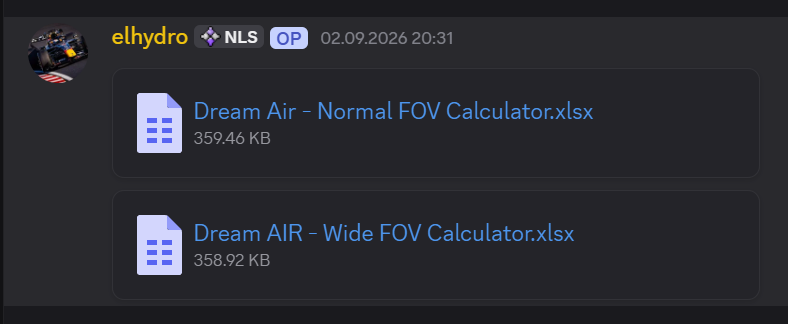
Ouvrez le fichier Excel et c'est tout pour le moment : nous en aurons besoin à l'étape 6.
ElHydro Calculator reprend exactement les formules et les chiffres des fichiers Excel pour 13 casques. Vous pouvez l'utiliser à la place du tableur à l'étape 6 — c'est le même résultat, directement dans le navigateur.
Checklist
Reset du Toolkit
Pour partir sur une base propre si vous avez déjà utilisé OpenXR Toolkit auparavant.
Pourquoi et comment
Pour s'assurer de bien débuter la configuration, si vous avez déjà utilisé le toolkit, je conseille de faire un reset (ce n'est pas obligatoire mais c'est mieux à mon avis).
- Ouvrir le jeu
- Ouvrir OpenXR Toolkit
- Aller dans
Menu→Reset→confirm - Fermez le toolkit, fermez le jeu, et relancez complètement le casque (redémarrage du casque et du service) : du coup on part propre.
Le choix du crop = la quantité de pixels que nous allons retirer.
Checklist
Choix du crop
Combien de champ de vision on retire en haut, en bas et sur les côtés — et pourquoi on raisonne en degrés.
Les six valeurs
Il faut maintenant choisir le crop Up (haut), Down (bas), Left/Left (gauche), Right/Right (droite), ainsi que le crop Left/Right et Right/Left (ceux près du nez). ElHydro propose des valeurs en fonction du modèle de voiture ; vous pouvez choisir une de ces valeurs et la tester. Ces valeurs sont indicatives et vous pourrez choisir celle qui vous convient le mieux. Le ressenti, le choix du visuel, le GPU, le CPU et plein d'autres critères ne permettent pas de donner une valeur qui serait considérée comme la meilleure.
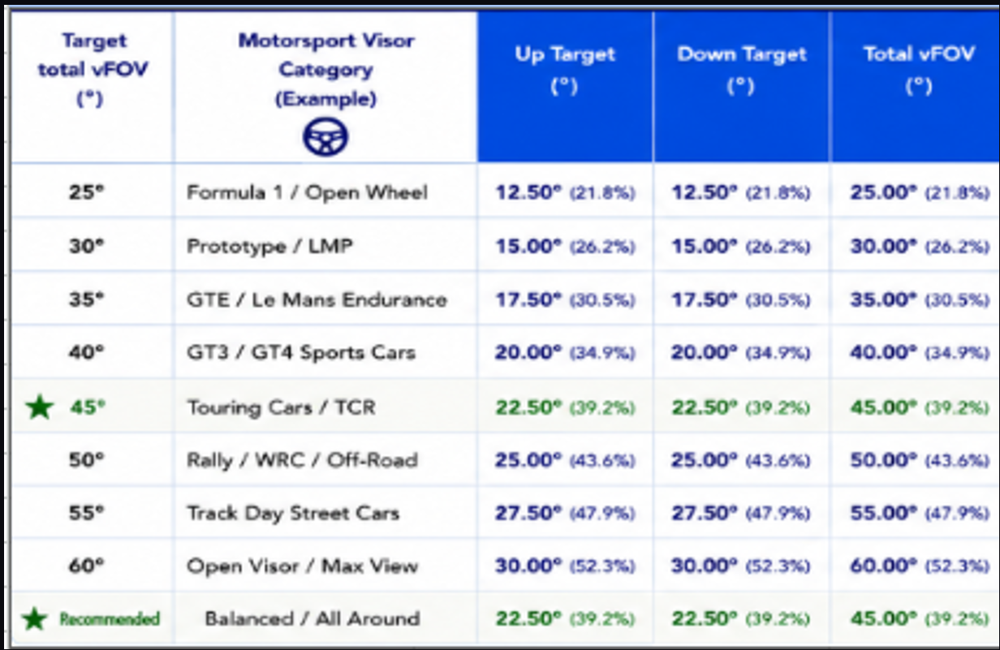
Mes valeurs personnelles
Personnellement je mets ces valeurs, mais elles dépendent à nouveau de mon ressenti, de la puissance de mon ordinateur, etc. : 70 ou 75 Up, 90 ou 95 Down et 99 % sur les côtés. Le crop près du nez (L/R et R/L) est calculé via le fichier Excel.
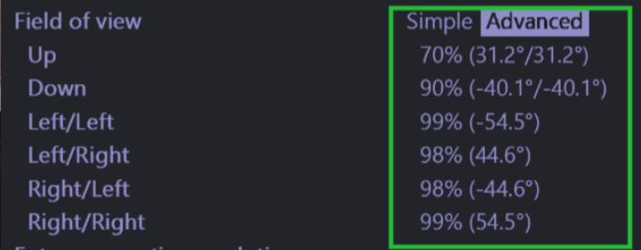
Le pourcentage (%) indique simplement la portion de vue d'origine que vous conservez. Par exemple, 70 % signifie que vous gardez 70 % du champ visuel natif du casque et en supprimez 30 %.
Les degrés (°) mesurent l'ouverture angulaire réelle perçue par vos yeux. C'est cette valeur en degrés qu'il faut garder en tête, car c'est la seule unité optique universelle : chaque modèle de casque a un champ visuel natif différent, un réglage de 70 % ne donnera pas le même angle sur un Dream Air que sur un autre casque.
C'est impératif pour la suite : dans le tableau Excel d'ElHydro, vous devrez renseigner la valeur en degrés (le chiffre entre parenthèses dans le Toolkit, ex. 31.20°) et non le pourcentage, pour que les formules de résolution soient exactes.
Checklist
Valeurs dans Excel
Trois angles en entrée, une résolution en sortie. C'est ici que la méthode fait son calcul.
Ouvrir le fichier Excel
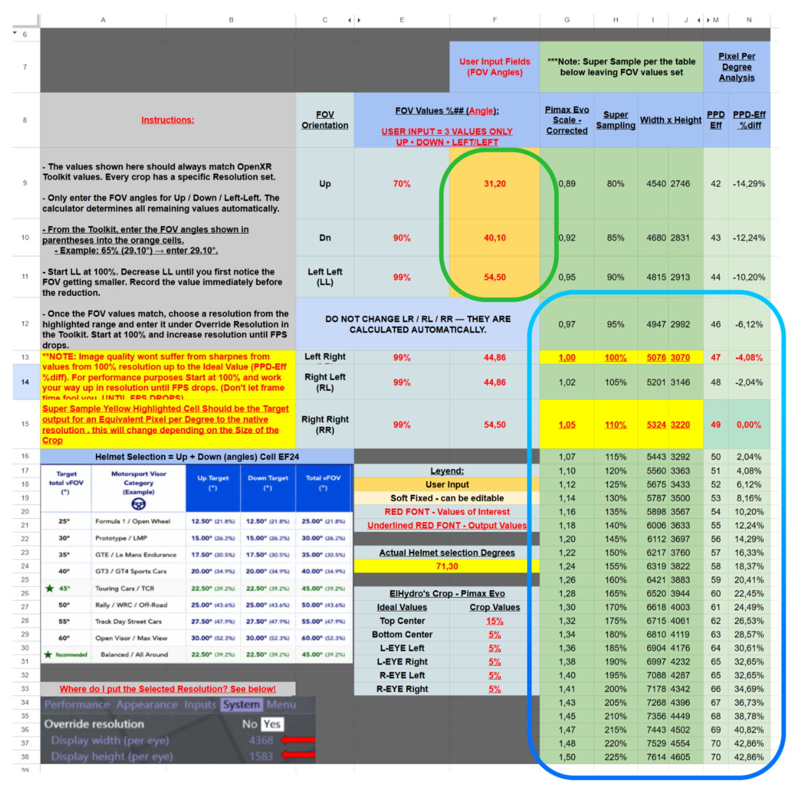
En vert : les 3 cases (Up, Dn, Left Left)
Ce sont les seules et uniques valeurs à modifier manuellement dans le tableur. Vous devez y reporter très exactement les angles en degrés que vous avez choisis (ici : 31.20°, 40.10° et 54.50°). Toutes les autres valeurs en dessous (Left Right, Right Left, Right Right) sont calculées automatiquement par la formule géométrique : ne les modifiez jamais à la main.
| Cellule | % | Angle à saisir |
|---|---|---|
| Up | 70 % | 31,20 |
| Dn | 90 % | 40,10 |
| Left Left (LL) | 99 % | 54,50 |
| Left Right / Right Left / Right Right : calculés automatiquement, ne pas toucher | ||
Exemple ci-dessus : pour Up, on tape 31,20 et pas 70.
En bleu : le super sampling que vous choisissez
Ligne 110 % SS (5324 × 3220) : c'est la cible de clarté native (0,00 % de différence PPD-Eff). En appliquant ce palier, vous compensez mathématiquement la perte de surface et retrouvez très exactement la même densité de pixels par degré que le casque non rogné.
Les paliers supérieurs (exemple : le palier 140 % à 6006 × 3633) : dès que l'on dépasse la ligne des 0,00 %, on rentre dans le suréchantillonnage pur (Super Sampling).
Essayez pour commencer les 2 valeurs en jaune qui apparaîtront dans votre fichier Excel. Par exemple, commencez avec la valeur 0,00 % (dans ce cas 5324 × 3220) et montez par paliers en fonction de votre carte graphique et de votre PC. Par exemple, si je choisis du 160 %, je vais mettre ces valeurs dans le toolkit : 6421 × 3883.
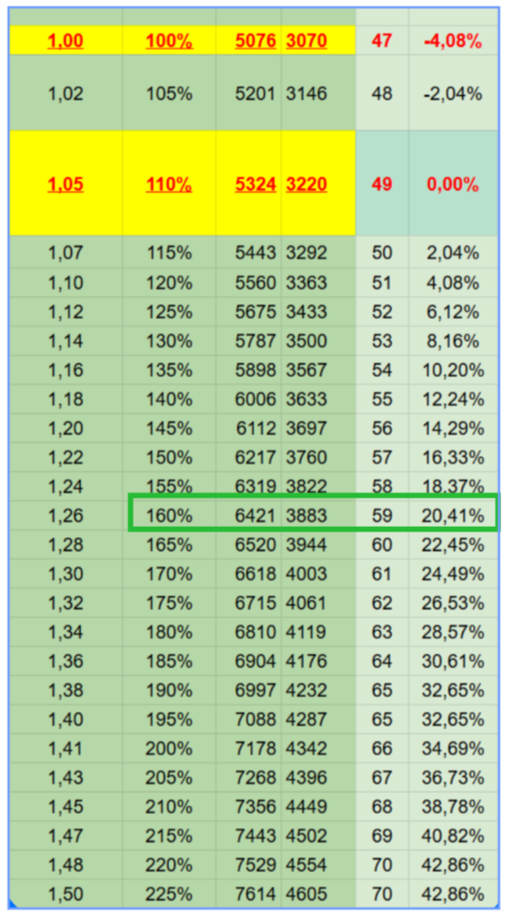
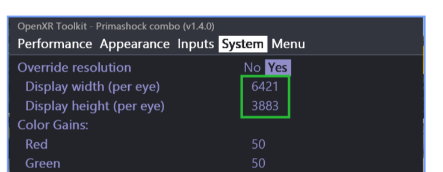
Les valeurs sont différentes en fonction du casque et du crop. Assurez-vous d'aller dans le bon fichier Excel et de regarder la bonne ligne une fois que vous aurez saisi les 3 valeurs (l'image ci-dessus est pour le Pimax Dream Air uniquement).
Sélectionnez votre casque, entrez les 3 angles, choisissez votre palier de super sampling : la résolution et les 6 valeurs de crop s'affichent directement. 🧮 Ouvrir le calculateur
En résumé
- Tapez les 3 valeurs (en degrés) dans la zone encadrée verte
- Choisissez votre résolution dans le tableau bleu
- Retenez les 6 chiffres de crop et les 2 chiffres de résolution
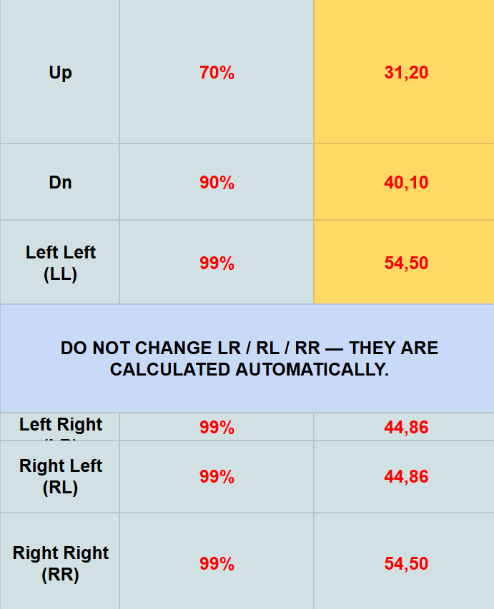
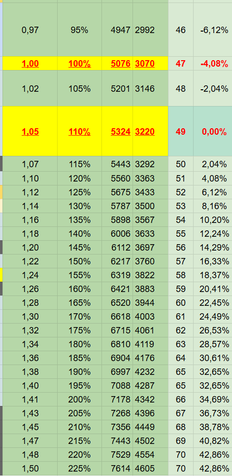
Checklist
Configuration du Toolkit
Avant de saisir le crop, on règle l'onglet Performance. Pas d'inquiétude : vous pourrez tester et ajuster vos valeurs directement en jeu avec le toolkit — vous verrez des bandes noires si vous appliquez un crop trop agressif, par exemple.
Ouvrez le jeu et ouvrez le toolkit maintenant
- Relancez le jeu et le toolkit.
- Sous Performance : mettre le CAS avec Size 100 %. Le Sharpness, vous le mettez selon les résultats obtenus en jeu (à tester donc : je le mets parfois à 0 %, parfois à 20 % et parfois à 75 % selon le jeu, donc à vous de choisir).
- Mettre le Turbo mode sur ON.
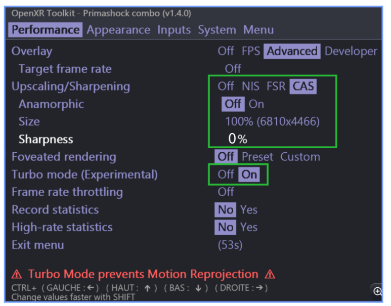
Ensuite on passe à la partie qui nous intéresse le plus : le crop.
Checklist
Saisie du crop et de la résolution
L'étape décisive : les 6 valeurs de crop et les 2 valeurs de résolution dans l'onglet System.
Dans l'onglet System
- Allez sous System.
- Saisissez les 6 valeurs de crop (Field of view → Advanced).
- Mettez « Override resolution » sur YES.
- Saisissez les 2 valeurs dans « Override resolution » (width et height).
- Ne touchez pas aux valeurs dans la case rouge (indépendamment des valeurs inscrites).
- Fermez le toolkit en allant sur « Exit menu ».
- Relancez le jeu et c'est tout bon normalement.
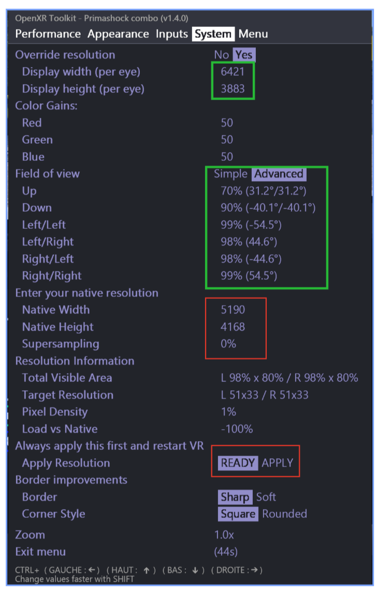
Ne touchez pas aux valeurs dans la case rouge (« Enter your native resolution » et « Apply resolution »). Si vous avez par erreur cliqué sur Apply et confirmé, refaites un reset du toolkit (étape 4) et relancez le tout pour être sûr.
Checklist
Quelques précisions et réglages complémentaires
Les réglages autour de la méthode qui font la différence sur l'image et les fps.
Toolkit et Pimax Play
- Le 3D boost : pour ma part je le laisse à 0 (conseil d'ElHydro également).
- Les drivers SBOYS 3 doivent être désactivés impérativement (les profils de distorsion ne correspondent pas bien avec les valeurs du fichier Excel).
- Dans Pimax Play, j'ai le quality à 1.0.
- Sun Glasses : ON (Light) — réglage incontournable préconisé par ElHydro sur les dalles OLED du Dream Air pour retirer le voile terne et déboucher les noirs. À vous de tester : sur certains jeux je préfère le désactiver (Appearance → Post processing ON).
- Vibrance : 15 à 25 — pour compenser la colorimétrie plate et rehausser le contraste des vibreurs et de la piste (Appearance → Post processing ON).
- Couper le Smart Smoothing dans Pimax Play.
Le combo magique anticrénelage : NVIDIA MFAA + MSAA 2x en jeu
C'est l'un des piliers secrets de la méthode ElHydro pour obtenir une image ultra-nette sans pénaliser les performances :
- Dans le Panneau de configuration NVIDIA : allez dans Gérer les paramètres 3D → sélectionnez votre jeu (ou les paramètres globaux) et réglez Multi-Frame Sampled AA (MFAA) sur Activé (On).
- Dans les paramètres graphiques du jeu (ex. AMS2) : réglez l'anticrénelage sur MSAA 2x (Low/Medium) et désactivez impérativement le Post-Processing Anti-Aliasing (Off).
Pourquoi ce réglage ? La technologie matérielle MFAA de NVIDIA combine les échantillons temporels pour transformer automatiquement un MSAA 2x en un rendu équivalent au MSAA 4x, tout en conservant le coût en performance dérisoire du 2x. Couper le Post-Processing AA évite quant à lui d'appliquer un filtre de flou logiciel destructeur.
Jouez sur la grandeur du crop et le super sampling (valeurs dans Override resolution) afin de trouver le bon équilibre, en termes de fps notamment. Je vous donne le processus, mais les valeurs sont souvent propres à chacun, à ses goûts et à son ordinateur : les résultats en fps ou en qualité peuvent varier.
Checklist
Ajouter l'overlay de casque (Helmet Overlay)
Optionnel : un casque de course réaliste superposé à l'image, contrôlé par la couche OpenXR de Le Dour, par-dessus le crop PrimaShock.
Le principe
Ce système ajoute, en VR, un overlay de casque réaliste : on a vraiment l'impression de regarder à travers un casque de course, et non plus simplement de voir le jeu à travers le casque VR.
Ce montage repose sur le système développé par @elydro, basé sur PrimaShock. PrimaShock lui-même a été créé par un autre développeur : @elydro a adapté le système PrimaShock via son convertisseur, celui qui permet de calculer la résolution correcte correspondant au crop de FOV souhaité. Le casque lui-même est ensuite ajouté et contrôlé via la couche OpenXR de Le Dour.
1. Le crop et la résolution d'abord
Avant d'installer l'overlay de casque, votre montage PrimaShock (étapes 1 à 9) doit déjà être installé et fonctionnel. Pour ce système de casque, le crop de départ recommandé est :
| Crop | Valeur |
|---|---|
| Haut (Top) | 20 % |
| Bas (Bottom) | 24,9 % |
Ces valeurs fonctionnent très bien comme point de départ général et s'adaptent bien à de nombreux designs de casque.
Quand vous changez le crop pour 20 % haut / 24,9 % bas, vous devez aussi ajuster la résolution de rendu. Utilisez le convertisseur d'@elydro (le fichier Excel) pour calculer la résolution correspondant à ce crop, puis saisissez-la dans OpenXR Toolkit comme expliqué aux étapes 6 à 8. Dans ElHydro Calculator, le bouton Helmet applique directement ce préréglage.
- Régler le crop sur 20 % haut / 24,9 % bas.
- Calculer la résolution correspondante (Excel ou calculateur).
- Saisir la résolution calculée dans OpenXR Toolkit.
- Puis passer à l'installation de l'overlay.
2. Installer la couche OpenXR de Le Dour
Téléchargez la couche OpenXR FOV Crop / Helmet Overlay de Le Dour : Le Dour – dernière version GitHub. La méthode la plus simple est d'utiliser l'installeur. Le programme est normalement installé dans :
C:\Program Files\OpenXR-Layer-fov-crop\
Si vous téléchargez plutôt la version ZIP, extrayez les fichiers dans un dossier permanent et suivez les instructions d'installation incluses. Les fichiers de configuration à modifier se trouvent ici (collez ce chemin dans la barre d'adresse de l'Explorateur Windows) :
%LOCALAPPDATA%\XR_APILAYER_MLEDOUR_fov_crop\
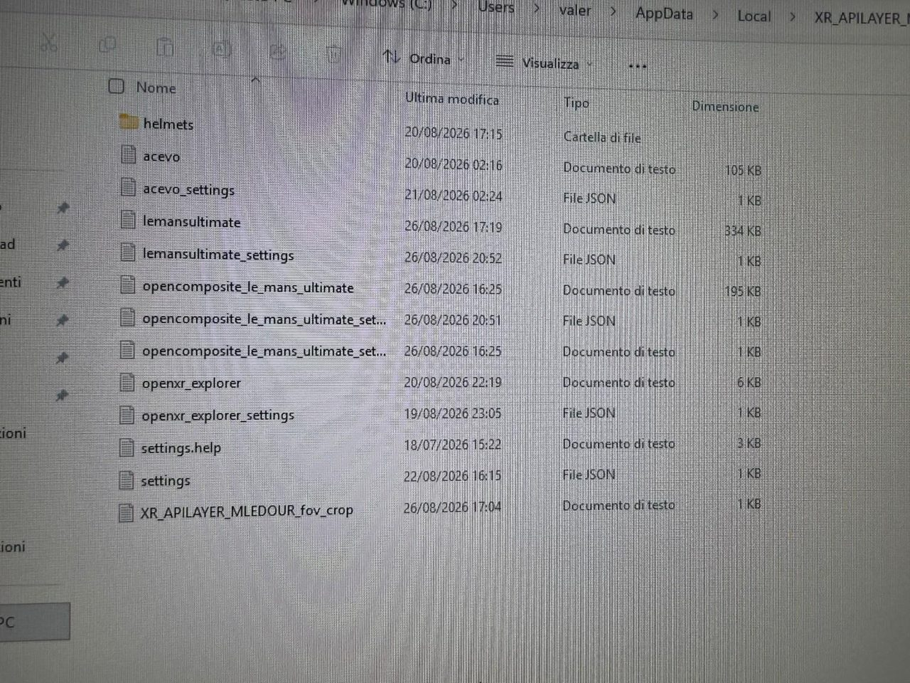
settings.json, le dossier helmets, et un fichier de configuration créé automatiquement pour chaque jeu lancé.La première fois, commencez par modifier settings.json. Après le premier lancement d'un jeu, Le Dour crée automatiquement un fichier séparé pour ce jeu : chaque jeu peut donc avoir sa propre configuration de casque.
3. Activer le système
Ouvrez settings.json, ou le fichier <jeu>_settings.json spécifique une fois créé.
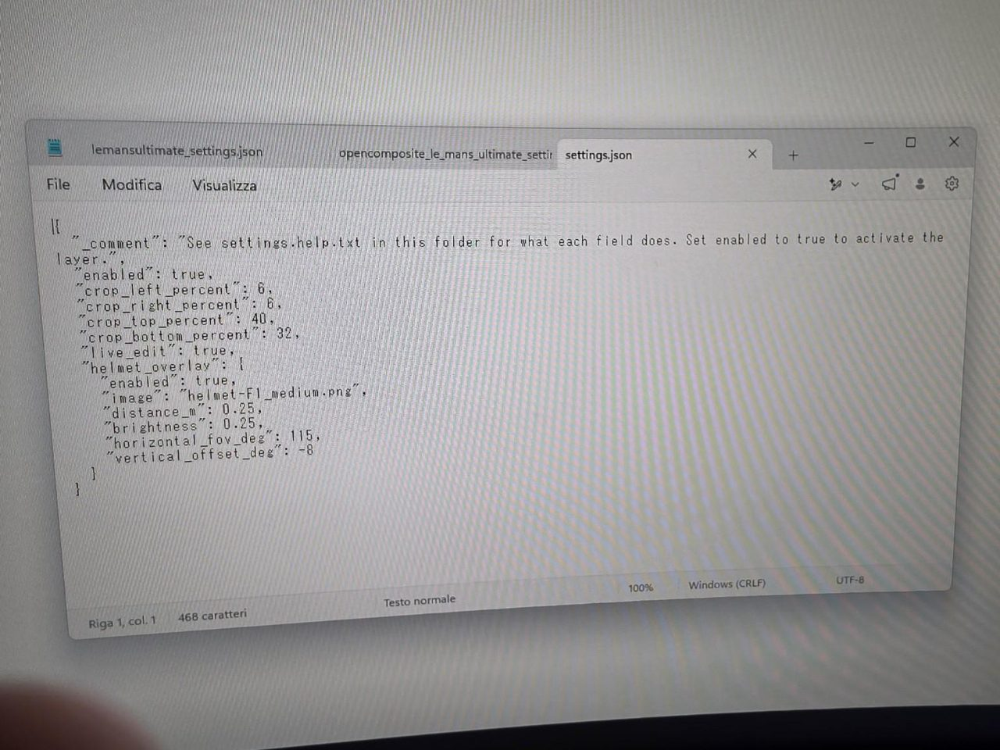
Au début du fichier, et dans la section helmet_overlay, vous devez avoir :
"enabled": true
Si l'un des deux est sur false, l'overlay ne fonctionnera pas. Pour l'édition en direct, ajoutez aussi :
"live_edit": true
4. Mettre tous les crops de Le Dour à 0
Le crop est déjà géré par PrimaShock : on ne veut pas que Le Dour applique un second crop par-dessus. Toutes les valeurs de crop du JSON de Le Dour doivent donc être à 0 :
"crop_left_percent": 0, "crop_right_percent": 0, "crop_top_percent": 0, "crop_bottom_percent": 0
Si d'autres chiffres apparaissent dans ces champs sur une capture, ignorez-les : ils ont servi pour les tests. Pour ce montage, tout doit être à 0 afin que les deux systèmes de crop ne se superposent pas.
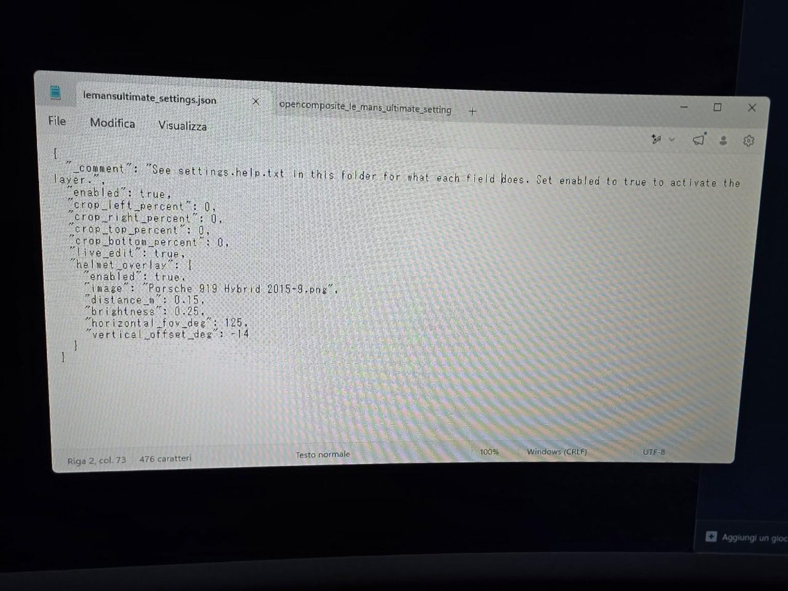
5. Ajuster le casque
Les trois réglages principaux :
"distance_m": 0.15, "horizontal_fov_deg": 125, "vertical_offset_deg": -14
Ces valeurs sont extrêmement personnelles : cela dépend de votre casque VR, de vos yeux, du design du casque de course et de la proximité voulue.
- Distance —
distance_mcontrôle la proximité du casque. Plus bas = plus proche : 0.25 plus loin, 0.15 beaucoup plus proche et réaliste, 0.10 / 0.09 / 0.08 extrêmement proche. En dessous d'environ 0.10, les mentonnières peuvent presque se chevaucher au centre de la vision. - FOV horizontal —
horizontal_fov_degcontrôle la largeur apparente. Si les mentonnières sont trop proches après avoir réduit la distance, augmentez le FOV : cela écarte les côtés. Mais cela agrandit aussi l'ouverture de la visière verticalement ; distance et FOV s'ajustent ensemble. - Décalage vertical —
vertical_offset_degdéplace le casque : positif = monte, négatif = descend. Ajustez jusqu'à ce que la visière soit naturelle autour de vos yeux.
Réglages de référence de l'auteur : distance 0.15, FOV 125, offset -14. Essayez-les d'abord, puis affinez.
6. Édition en direct et casques supplémentaires
Avec live_edit: true, vous pouvez laisser le jeu tourner : changez un chiffre, enregistrez (Ctrl + S), et la modification s'applique en VR. Seul le changement d'image de casque nécessite un redémarrage du jeu.
Le Dour n'inclut que quelques PNG de base. Placez vos PNG de casque dans :
%LOCALAPPDATA%\XR_APILAYER_MLEDOUR_fov_crop\helmets\
Puis, dans la section helmet_overlay du JSON du jeu, remplacez uniquement le nom de fichier :
"image": "Ferrari 488 GTE.png"
Le nom doit correspondre exactement au PNG (espaces, majuscules, .png). Le plus sûr est de copier-coller le nom du fichier.
Ne modifiez pas la structure du fichier : uniquement true/false là où c'est indiqué, les chiffres de crop, distance, FOV, offset et le nom du PNG. Une virgule, un guillemet ou un crochet supprimé par erreur peut empêcher le système de fonctionner.
Résultat
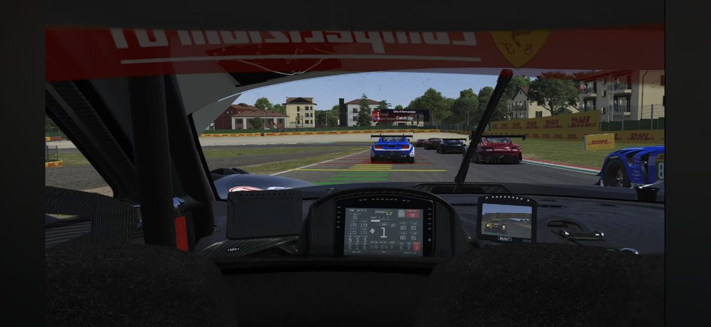
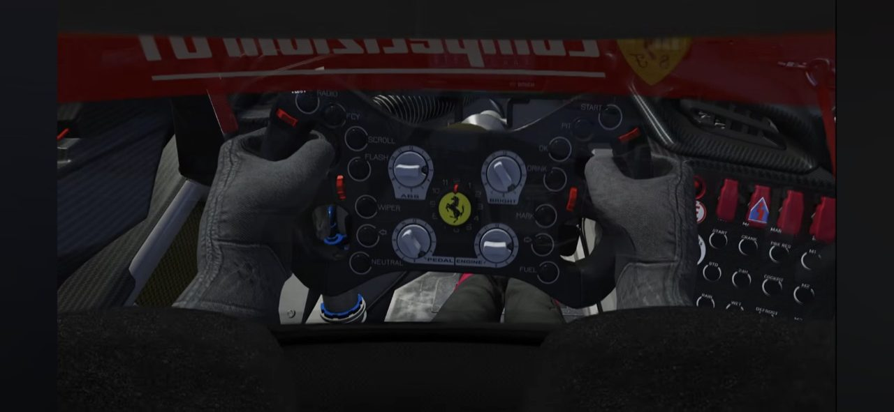
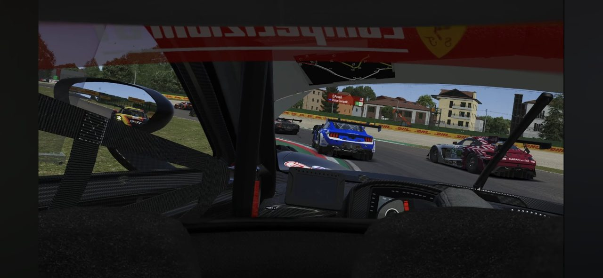
Checklist
Merci
Ce mod a été fait gratuitement par ElHydro. Pour le remercier, vous pouvez faire une donation ici : buymeacoffee.com/Elhydro. Overlay de casque : couche OpenXR de Le Dour.